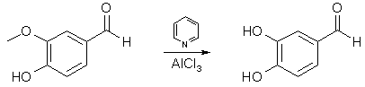
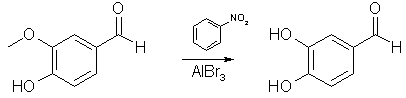
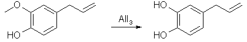
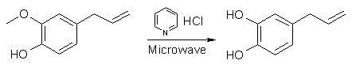
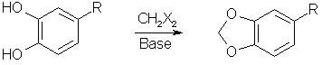
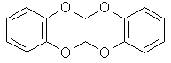

Vanillin Demethylation with Pyridine and AlCl31

Anhydrous AlCl3 (9.7 g, 0.0724 mol) was suspended in a solution of 10g (0.0658 mol) of vanillin in 100 ml of methylene chloride in an apparatus protected
from atmospheric moisture. While stirring briskly and cooling to maintain the temperature at 30-35�C, 22.9g (0.290 mol) of pyridine was added slowly. The
reaction was vigorous; the resulting clear light orange solution of the reaction complex was heated to reflux (45�C) and maintained at that temperature
with stirring for 24 hours. The solution, which had darkened only slightly during the reflux period, was cooled to 25�C and the product was hydrolyzed,
while stirring and maintaining the temperature at 25-30�C, by the addition of dilute (15-20%) HCl until the mixture was definitely acidic to congo red
indicator. Of the two phases present at this time, the lower methylene chloride layer contained most of the small amount of the unchanged vanillin, and
essentially no protocatechuic acid, the latter was dissolved in the aqueous phase. Evaporation of the methylene chloride yielded 0.8 g of vanillin.
Extraction of the aqueous phase with ether followed by evaporation of the ether left 7.9 g (87%) of pale yellow crystals of protocatechualdehyde melting
at 153-154�C.
Using the cheaper triethylamine in place of pyridine lowered the yield to 61.5%
Vanillin Demethylation with Nitrobenzene and AlBr32

A solution of 15.2 g (0.1 mole) of vanillin in 45 ml of nitrobenzene at 15�C is treated with a solution of 53.4 g of anhydrous aluminium bromide in 60 ml
of nitrobenzene. 125 ml of nitrobenzene are added to the gel which forms with stirring (do not breath nitrobenzene vapors or let it in contact with
the skin. If contact occurs flush area with water for 15 min). Heat the solution to 95�C and then let cool to room temperature. Allow to stand at room
temperature for 30 minutes. The dark mixture is cooled and added to 1 L of water containing a little HCl. The mixture is extracted with ether and the ether
is then extracted with 5% NaOH. The hydroxide solution is washed with ether and then acidified with dilute sulfuric acid. The acidic solution is extracted
with ether, dried, and then distilled off to leave ~12.8g (93%) of protocatechualdehyde.
Eugenol Demethylation with Lithium Diphenylphosphinate10
To a solution of 11.5 g (0.07 mol) of eugenol in 30 mL of dry THF was added stepwise 2.1 g (0.07 mol) of a dispersion of NaH in oil (80%). After the evolution
of gas had stopped a solution of 13.4 g (0.07 mol) of LiPPh2 in 60 mL of THF was added. After stirring for 3 h, 2 mL of water was added and the mixture was poured
into 200 mL of degassed 0.2 N aqueous NaOH. The yellow solution was washed with ether (4x). and the combined organic layers were extracted with 100 mL of 0.2 N
aqueous NaOH. The combined water layers were acidified with concentrated HCl to pH 6. The resulting emulsion was extracted with ether, and the organic layers were
washed with water (5x), dried (MgSO4), and evaporated to dryness. Purification by column chromatography (eluent: 2% MeOH in CHCl3) gave 5.97 g (57%) of a brownish
oil which could be further purified by sublimation. A yield of 3.9 g (37%) of 4-allylcatechol was obtained as a bright white solid.
Eugenol Demethylation with Lithium Chloride in DMF11
A solution of 354 ml (2.30 mmol) of eugenol and 292 g (6.89 mol) of lithium chloride in 3.7 L of N,N-dimethylformamide was refluxed for a total of 44 hours (h),
and after 4 h, 18 h and then 7 h, a further 292 g (6.89 mol) of lithium chloride were added each time. After cooling, 2 L of toluene were added and the resultant
precipitate was filtered off with suction and extracted with toluene. The organic extracts were combined and concentrated on a rotary evaporator. After flash
chromatography (ether/pentane, 1:1, Rf = 0.37) on silica gel, 173 g (50%) of 4-allylcatechol were obtained.
Eugenol Demethylation with AlI33

Summary: Reflux aluminium powder with iodine in benzene or cyclohexane for 90 min to produce AlI3. Add equimolar amounts of vanillin, 0.25 eqv PTC
(tetrabutylammonium iodide, chloride may also work), reflux for 20 min, and isolate the protocatechualdehyde (88%)
Aluminum Triiiodide preparation
1 mol Al turnings (or foil or powder all work well, powder is the quickest closely followed by foil then turnings a distant third) is combind with
1.5mol (note the excess of Al) of Iodine in 1000mL of cyclohexane (exchange solvent as needed but not diethyl ether!). This mix is stirred under reflux
until the red colour has turned to a grey (about 1.5hrs with powder, 2-3 with foil, 4+ with turnngs). At this point the heat is turned off and the AlI3in solvent allowed to cool to room tempeature with stirring.
Reaction with Eugenol
In a dropping funnel, eugenol (1 mol), tetrabutylammonium iodide (1/360 mol) and a little cyclohexane are combined. This is slowly dripped into the
AlI3/cyclohexane mixture made in the previous step with vigourous stirring and inert gas sheilding. After all the eugenol has been added the solution is
brought to reflux (it is a tan coloured slurry at this point, but upon refluxing turns less viscous) for 1 hour. The solution is then cooled in an ice bath
and hydrolysed with ~600mL of water, slowly.
The resultant mix is filtered under nitrogen and the solid collected immersed in ethyl acetate, this is swirled for a couple of minutes, then filtered.
The ethyl acetate is seperated from the water (collected through the filtration) and removed and what you have left is a tan coloured solid with a
charactistic 'smoke' smell and a melting point 45-51�C, althought this range could be tightened by recrystalisation or vac distillation with hot water in
the condenser.
A few notes:
- If you are quick then maybe you can not bother with the inert atmoshpere in the workup, however the filtering takes a long time (don't even consider using gravity) beacause the Al is very finely divided and clogs up the filter paper. The use of a filtering aid like Celite is recommended.
- It seems the reactant ratios are critical so get them right.
- The workup is a shit for large quantities, any suggested impovements would be appreciated.
Eugenol Demethylation with Pyridine HCl4
Written by Startinout

Basically the microwave demethylation fucking rocks, as far as ease goes, but the downside is because you need 5:1 pyridine HCl:eugenol.
I made my pyridine HCl by gassing pyridine with anhydrous HCl gas, this was pretty easy (just gassed it for a while, some crystals formed but it
was quite hot so i froze it, many more crystals formed, filtered it, washed with ether, then put the crystals on the bench to dry, came back, almost
no crystals left and very sloppy, note-they are very deliquescent and they sublime so put them in a closed container immediately post production.
Experimental
Microwave Demethylation
All I did was added eugenol in the weight ratio five parts pyridine HCl two parts eugenol (this is molar 5:1), put this in a round bottom flask,
stoppered it, microwaved in a normal microwave on medium low (the paper uses 215 watt oven) for two minutes, the stuff melts and turns quite hot, it was
removed, cooled under the tap until it was room temp again (just felt it with my hand), then microwaved again for two minutes etc etc, this process was
repeated six times, the more you do it the hotter it gets each time. After the sixth time i cooled it again, poured some cold water from the fridge into
into it and extracted it three times with ether, pooled the ether extracts, removed the ether on the rotavap, the residue had no smell of clove oil
whatsoever, just the smokey smell of the demethylated product, so i assumed quantitative yeild cause I couldn't be fucked vac distilling a room temp solid
and/or GC'ing it, also the methylation requires an excess of all other reagants anyway.
Methylenation
So I put in some DMF, some KF and stirred at room temp for 1hr, there is quite a noticable colour change from light yellow brown to brightish orange
red, then i added di-iodo-methane because I had it but the paper uses dibromo so this should be fine (the paper also uses DCM if anyone wants to try). The
proportion of all these additives are by mole:
- 1 mole di-hydroxy stuff
- 5 moles KF
- 1L DMF/mole di-hydroxy stuff
- 1.1 mole Dihalomethane
Anyway after the dihalo (did you know diiodomethane has a density of 3.5g/mL!) stuff is added the mix is heated to ~120�C for 1.5hr. If you have used
DCM or DBrM it will reflux, DIM will not at this temp). The mix is then cooled, water added then extract with ether, the ether cleaned with water (to
remove DMF), 5% NaOH (to remove any phenols), then the ether is vacuumed off and the residue vaccum distilled, I added some high boiling paraffin to stop
scorching from my heating/stirring mantle.
My yeild of safrole (confirmed with a library FTIR match) was 30%, which sounds crap but given
- I had never done it before
- I took heaps of shortcuts
- It all took little more than a morning
- There are heaps of areas where things can be tweaked and made more OTC
- It is reasonablely scaleable
Possible improvements to the above procedure (by Psychokitty)
- After demethylating the eugenol using pyridine HCl, I would recrystallize the final product using toluene or petroleum ether. That way you have a
better idea just how good or bad your yields are.
- I would ditch the methylenation reaction that you've been using in favor of the biphasic PTC reaction. It seems to be more simple and forgiving of
mistakes.
- I would try experimenting with the pyridine HCl reaction by reducing the pyridine HCl to eugenol ratio. Maybe less could be used. Also, I would
think very seriously about adding a little PTC to the mix. It probably wouldn't hurt and actually might help a shitload. I predict huge leaps and
bound with that novel application.

Catechols (1,2-dihydroxybenzenes) reacts with dihalomethane to form a methylendioxybenzene (1,3-benzodioxole) derivative under the influence of a base
as a catalyst. Formaldehyde, commonly used to form acetals of similar structure in aliphatic compounds, can not be used with aromatic compounds.

The term catechols include pyrocatechol, protocatechualdehyde (3,4-dihydroxybenzaldehyde) and 4-allylcatechol (3,4-dihydroxyallylbenzene). The
dihalomethane used in the reaction can either be methylene chloride (CH2Cl2, bp 40�C), methylene bromide (CH2Br2, bp 97�C) or methylene iodide (CH2I2, bp
181�C). Mixed halomethanes can also be used, such as bromochloromethane (CH2BrCl, bp 68�C). The reactivity (and also yields) are the highest with the iodo
derivatives and lowest with the chlorides. However, methylene chloride is several orders of magnitude cheaper than methylene iodide per mole, and also
easier to aquire, so there are pros and cons of all the alternatives. The base, most commonly sodium hydroxide, is used to deprotonate the phenols to
diphenoxide dianions, making them much more reactive towards dihalomethanes.

A side reaction in the methylenation of catechols is polymerization, resulting from two or more phenols becoming linked together by the dihalomethane,
forming undesired products like the one depicted to the right. Suppression of the formation of such by-products can be effected by keeping the concentration of
catechol low in the reaction mixture compared to the dihalomethane, for example by dripping a solution of the catechol into a solution of the dihalomethane.
Many of the newer high-yielding methylenation procedures use a PTC (phase-transfer catalyst) to catalyse the process. It helps carry water-soluble ions
(phenoxide) into an organic layer (such as dihalomethane), therefore accelerating the reaction.
Methylenation Of Catechols with Dichloromethane in DMSO7
This is one of the earliest successful high-yield methylenation of catechols reported using dichloromethane. It is a bit outdated as it uses complicated
equipment to perform the reaction, but it is a good illustration of the reaction.
A mixture of 100ml dichloromethane and 500ml DMSO was stirred and heated to 125-130�C under a wide-bore liebig condenser. The air was displaced by nitrogen,
and then with 5-minute intervals pelleted catechol (5.5g) and pelleted sodium hydroxide (4.15g) was added simultaneously, until a total of 110g catechol and
83g of sodium hydroxide had been added during 105 minutes. After a further 20 minutes, 20ml dichloromethane and 3g sodium hydroxide was added and the stirring
was continued for yet a further 70 minutes. The reflux condenser was replaced by a Vigreux column and a constant-take-off distillation head. Water (50 ml)
was added and the benzodioxole-water azeotrope was distilled off at 98-100�, more water being added slowly as distillation proceeded. Benzodioxole ceased to
separate as a heavy oil from the distillate after ca. 600 ml. of distillate had been collected. The aqueous distillate was extracted with ether (3x60 ml)
and the combined oil and extract was dried and distilled to yield benzo-1,3-dioxole as a colourless oil; nD21 1.5377, bp 173-176�C (80°C/9 mmHg).
The same procedure applied to protocatechualdehyde (13.8g) gave 9.15g piperonal (61%) after steam distillation.
The patented procedure below offers 1) higher yield, and 2) simplified addition of the reagents:
A solution of 110 g of catechol, 120 ml of 50% aqueous sodium hydroxide and 200 ml of DMSO was heated to 98�C and stirred at that temperature for 30 minutes.
This solution at 98�C. was added over a 30 minute period to a refluxing solution of 120 ml of methylene dichloride in 300 ml of DMSO. Thereafter, the reaction
mixture was stirred at reflux for 1.5 hours. Steam was then passed into the mixture to achieve steam distillation of the product. The distillate (600 ml) was
extracted with 100 ml of methylene dichloride, which extract was washed once with 50 ml of water. The methylene dichloride solution was then concentrated in
vacuo at 40�C to yield 119.4g of a colorless oil. Gas chromatographic analysis showed 97.5% methylenedioxybenzene. Yield 116.4g (95.4%).
PTC Methylenation of Catechol (Using Adogen 464)5
A mixture of water (20 mL), dibromomethane (150 mmol) and Adogen 464Note1 (1 mmol) was vigorously stirred and heated to reflux. The air in the
system was displaced by nitrogen. A solution of the appropriate o-dihydroxy-benzene (100 mmol) and sodium hydroxide (250 mmol) in water (50 mL) was added
at such a rate that the addition was complete after 2 hours. After the addition was complete, the reaction mixture was stirred and refluxed for a further
hour. The product was then isolatedNote2 and identified. Yields obtained were 76% to 86%.
It is important to ensure an adequate stirring rate [>400 rpm] and also to add slowly the solution of catechoxide dianion to the reaction mixture, so
as to avoid the possibility of intermolecular reaction, producing dimers/polymers
Notes:
- Adogen 464, is a methyltrialkylammonium chloride supplied by Aldrich Chemicals. The Alkyl groups are a mixture of C8-C10 straight chains with
an average of nine carbons. The molecular weight, determined by titration, was found to be 457. Other PTC's, Such as Aliquat 336 can be used. Dichloromethane
may also be substituted for dibromomethane, in that case increase the reaction time with one hour, and expect somewhat lower yields.
- Isolation performed by steam-distilling the benzodioxole as in the reference above.
PTC Methylenation of Catechol (Using TBAB)6
100 ml of dichloromethane, 6.42 g of tetrabutylammonium bromideNote1 and 200 ml of water were placed in an autoclave, and a total of 27.6 g (0.2
moles) of protocatecualdehyde and 24 g (0.6 moles) of sodium hydroxide in 30 ml of water were added in stages at a temperature of 70�CNote2. The
pressure increased to a maximum of 2.4 atm, and the reaction was continued for 4 hours. After this time the reaction mixture was cooled to ambient temperature, the organic phase was separated and the excess methylene dichloride was
recovered by distillation. 21g (70%) of high purity piperonal were isolated.Note3
Notes:
- Other tetraalkylammonium salts may not work - if any of the alkyl groups are lower than 4 carbons in length they are rapidly attacked by strong alkali [Hoffman elimination of the quat] and the quarternary ammonium salt destroyed.
- The patent reports temperatures between 30�C to 120�C. If dibromomethane is used instead, the reaction may be carried out at reflux.
- As the reaction products form they are extracted by the methylene dichloride, because of which at the end of reaction it is sufficient to allow the
organic layer to decant to obtain simple and rapid separation of the reaction product from the starting compounds, which remain in the aqueous layer. The
methylene dichloride may first be distilled from the organic phase and recycled, and then the methylenedioxy product may be distilled off at high purity.
The catalyst remains as a residue, and may be recovered and recycled. The quantity of methylene dichloride may vary, but is preferably between 1 and 5
moles per mole of the protocatecualdehyde. However it is always advantageous to operate with an excess of methylene dichloride so as to work with
a double phase and extract the product in the organic phase. The catalysts are preferably used in quantities of from 1 to 10 mole% with respect to the
protocatecualdehyde, and may be recycled. Sodium hydroxide is preferably present in an amount between 30% and 150%, based on the mole equivalent
of the diphenol added. The concentration of the diphenol sodium salt in the aqueous phase is advantageously maintained between 0.1% and 40% by weight.
The reaction occurs between 30�C and 120�C, but maximum reaction speed is obtained between 60�C and 90�C.
PTC Methylenation of Catechol (Using CTAB)8
11.0 grams (0.1 mol) catechol is dissolved in 1000ml of 20% NaOH, and 3.2 grams (0.1 mol) of cetyltrimethylammonium bromide (Cetrimonium Bromide, CTAB) is added. The mixture is
heated to 60�C for 30 minutes and then allowed to cool to room temperature, whereupon 21.2 grams (0.25 mol) of dichloromethane is added with stirring.
The mixture is then heated to 80�C with a good reflux condenser for 5 hours, the solution saturated with NaCl and filtered. The solution is then extracted
with 3x50 ml CH2Cl2, the pooled extracts washed with 50ml 20% NaOH to remove any phenolic materials, and then with 50 ml brine. The solution is dried over
MgSO4, and the solvent removed under vacuum. Yield 90% of 1,3-benzodioxole.
KF Catalyzed Methylenation of Catechol9
A solution of 11.0 grams (0.1 mol) of catechol in 300 ml anhydrous DMF was shaken with 5.8g (0.5 mol) of KF and the mixture warmed up somewhat. 9.35 g
(0.11 mol) of CH2Cl2 was then added to the cooled solution, and the mixture heated at 110-120�C with an efficient reflux condenser for 2-3 hours. The cooled
reaction mixture was extracted with ether, and the etheral extracts washed with water to remove DMF and with cold 5% NaOH. The solution was dried over MgSO4,
and the solvent removed by evaporation. The residue was extracted with hot hexane followed by cooling, and evaporation of the extracts to give a 90% yield
of 1,3-benzodioxole.